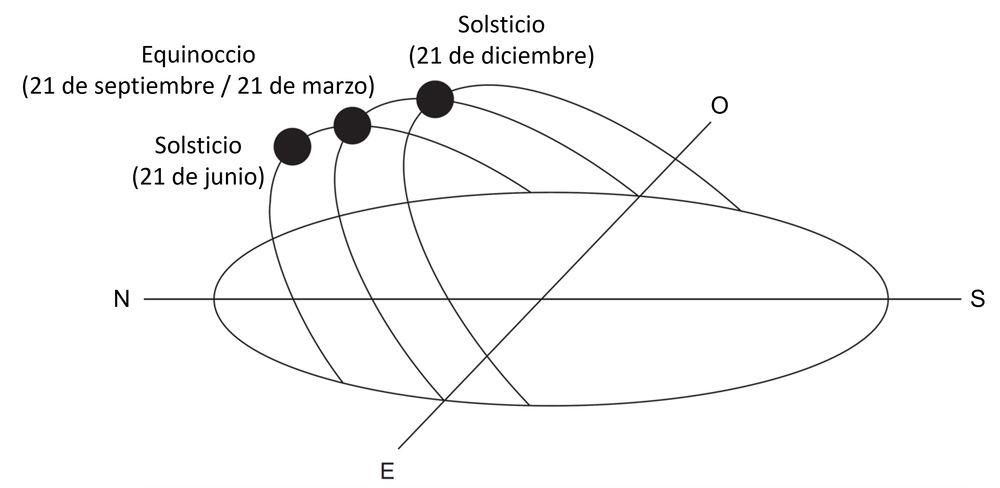
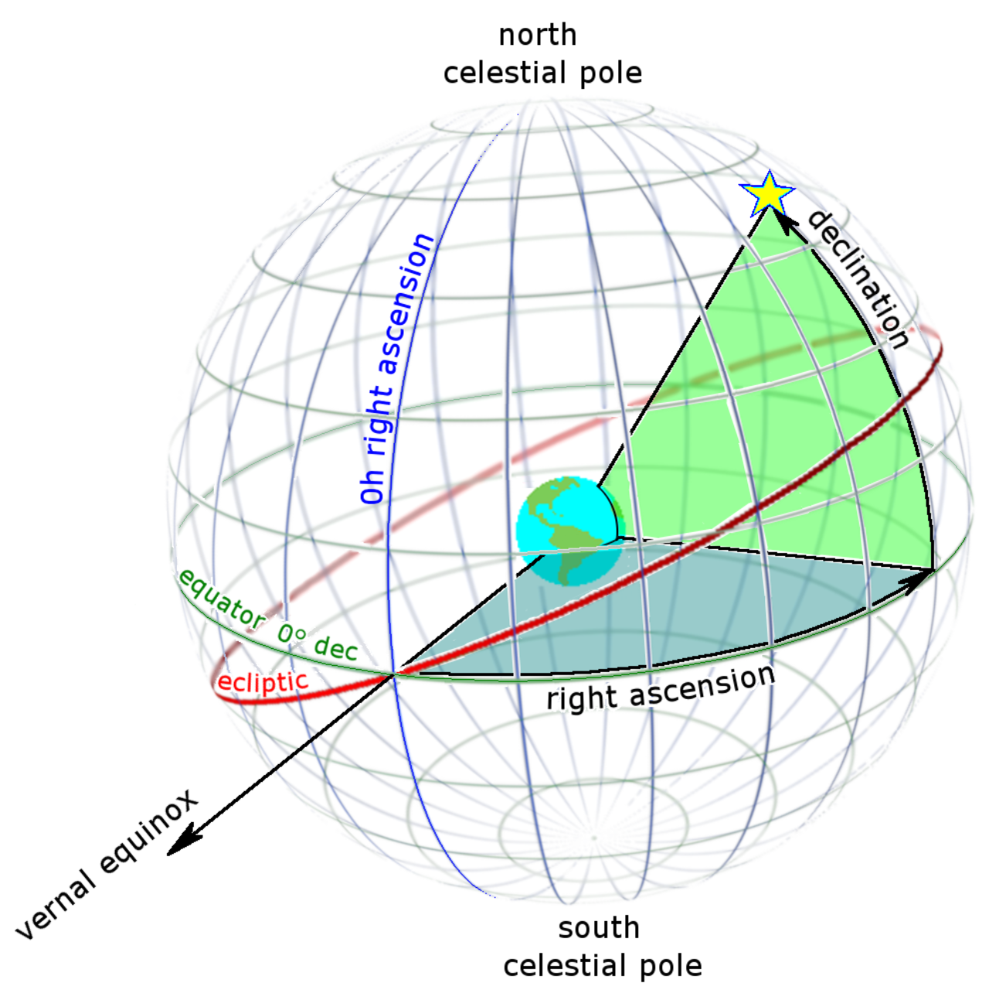
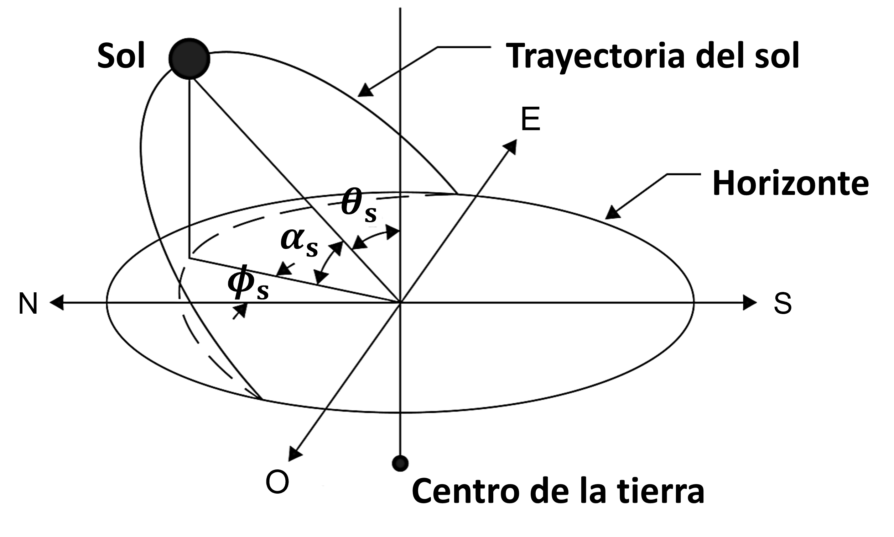
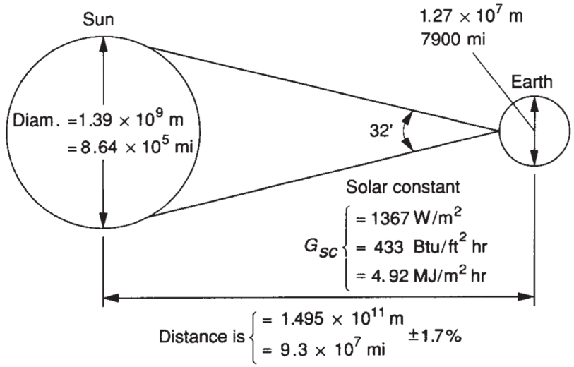
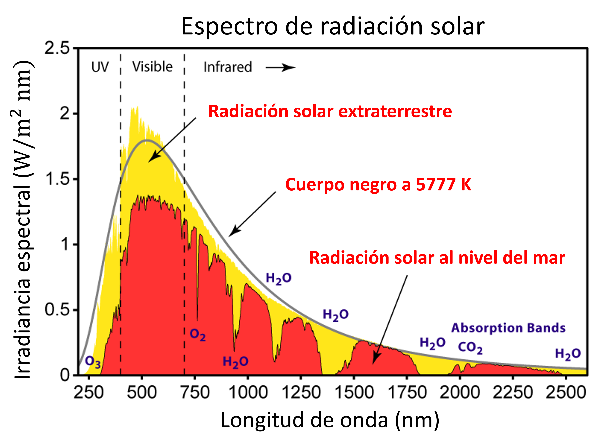
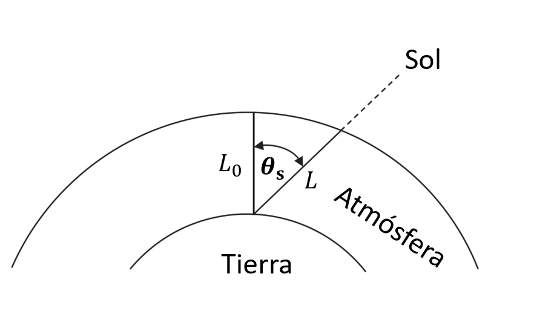
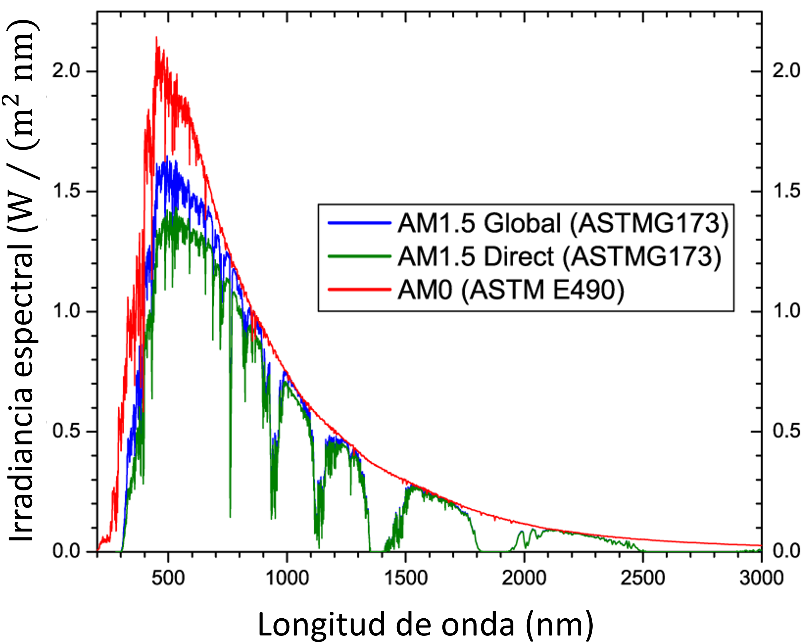
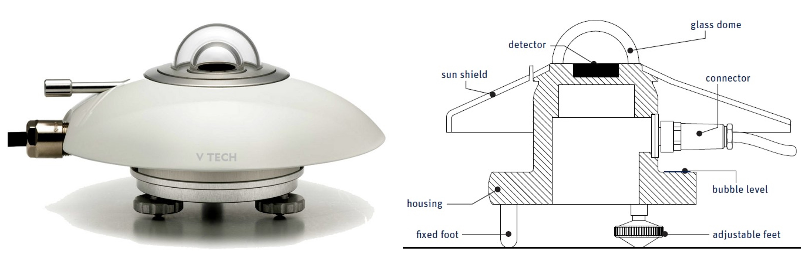
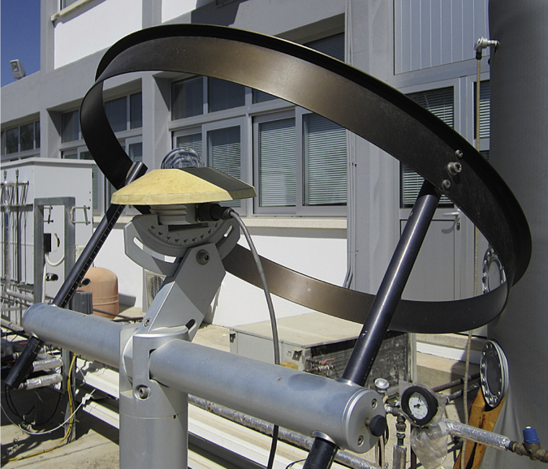
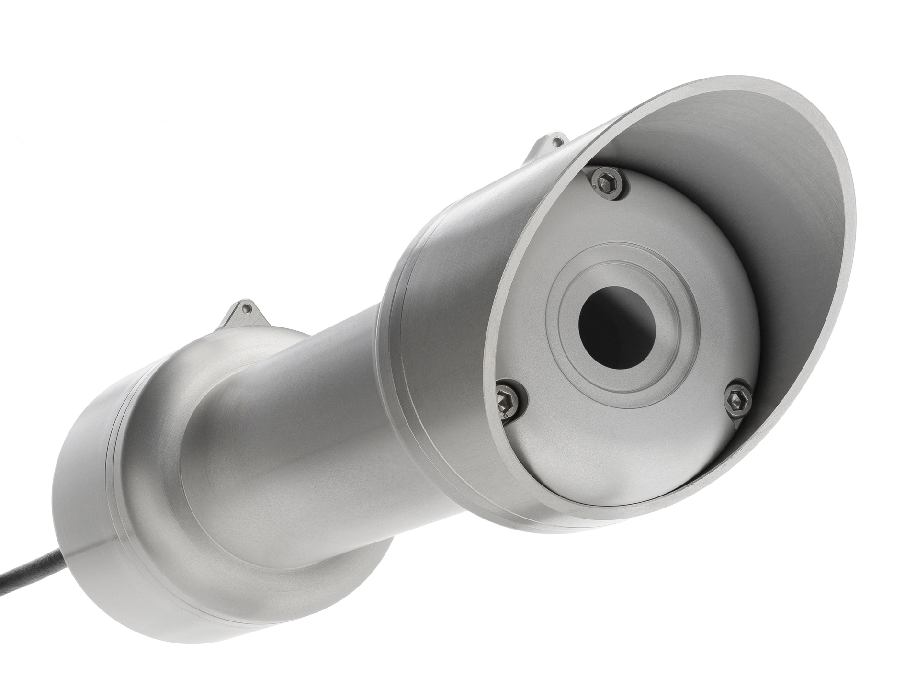

Radiación Solar
Contents
MEC501 - Manejo y Conversión de Energía Solar Térmica
7. Radiación Solar#
Profesor: Francisco Ramírez Cuevas
Fecha: 14 de octubre 2022
7.1. Ángulos solares#
7.1.1. Características de la órbita de la tierra#
La órbita de la tierra aproximadamente circular, con una pequeña excentricidad (\(e = 1.673\)%).
La distancia entre el sol y la tierra está dada por: \(d_\mathrm{e-s} = 1.495\times 10^{11}~\mathrm{m}\pm 1.7\)%.
El eje de la tierra está inclinado 23.45° del plano ecliptico (plano de la órbida de la tiera)

7.1.2. Trayectoria del sol#
A raíz de estas caracteristicas, la trayectoria del sol vista desde la tierra forma un arco. En el hemisferio sur de la tierra, este arco aparece desplazado hacia el norte(sur) del eje Este-Oeste en el solsticio del 21 de junio (21 de diciembre). En el hemisferio norte ocurre lo opuesto. Durante los equinoccios el arco está centrado en el eje Este-Oeste independiente del lado del hemisferio.
{kind=link}
7.1.3. Posición del sol en coordenadas ecuatoriales#
Utilizando el plano ecuatorial como referencia, podemos definir la posición del sol respecto a dos ángulos, declinación solar y ascención recta
{kind=link}
La declinación solar, \(\delta\) corresponde al ángulo vertical medido desde el plano ecuatorial.
La ascención recta, \(\mathrm{AR}\) se define como el ángulo horizontal en referencia al eje del equinoccio vernal (21 de marzo), también conocido como punto de aries. Se mide en horas, con 1 hora equivalente a 15°.
En el equinoxio del 21 de marzo, \(\delta \approx 0°\) y \(\mathrm{AR}\approx 0\) h
La declinación solar esta asociada con la inclinación del eje polar respecto al plano eclíptico.


7.1.4. Posición del sol respecto al plano horizontal local#
Una forma más intuitiva de definir la posición del sol, es utilizando el plano horizontal local. En este caso, caracterizamos la posición del sol respecto a los ángulos, elevación solar (\(\alpha_\mathrm{s}\)) y acimut solar (\(\phi_\mathrm{s}\)).
{kind=link}
El ángulo de elevación solar, \(\alpha_\mathrm{s}\), corresponde a la posición del sol respecto al plano perpendicular al horizonte local. Su valor es complementario al ángulo cenital solar \(\theta_\mathrm{s} = \pi/2 - \alpha_\mathrm{s}\).
El ángulo acimut solar \(\phi_\mathrm{s}\) mide la proyección de la posición del sol en el plano horizontal local. En el hemisferio sur(norte), el valor \(\phi_\mathrm{s} = 0\)°, corresponde al eje norte(sur) creciendo en dirección oeste.
El valor de \(\alpha_\mathrm{s}\) y \(\phi_\mathrm{s}\), es función de \(\delta\), \(\mathrm{AR}\), la longitud, latitud y la hora local.
En este curso utilizaremos \(\alpha_\mathrm{s}\) y \(\phi_\mathrm{s}\) directamente utilizando fuentes disponibles en línea.
7.1.5. Ángulo de incidencia#
El ángulo de incidencia del sol, \(\theta_\mathrm{i}\), corresponde al ángulo cenital relativo a la norla de una superficie. En la siguiente figura se muestra una superficie inclinada con ángulo cenital \(\beta\) y ángulo acimutal \(\Phi\) respecto a la dirección normal al plano horizontal

Considerando la posición del sol relativa al plano horizontal, el ángulo de incidencia es:
Para una superficie en posición horizontal, \(\theta_\mathrm{i} = \theta_\mathrm{s}\)
7.2. Características de la radiación solar#
La radiación solar puede ser estimada como un cuerpo negro a temperatura \(T_\mathrm{sun} = 5777 K\). Sin embargo, la radiación solar es el resultado de la emisión de muchas capas con diferente composición, y cuya temperatura puede alcanzar más de 100,000 K.

7.2.1. Constante solar#
Consideremos el sol como un cuerpo negro a temperatura \(T_\mathrm{sun} = 5777\) K.
El calor total por radiación emitido por el sol es \(\pi D_\mathrm{sun}^2 E_\mathrm{sun}\), donde \(D_\mathrm{sun} = 1.39\times 10^9\) m es el diámetro del sol.
Considerando la distancia entre el sol y la tierra, \(d_\mathrm{e-s} = 1.495\times 10^{11}\) m, el flujo de radiación sobre la superficie de la tierra, \(G_\mathrm{sc}\), es:
La constante solar \(G_\mathrm{sc} = 1367\) W/m\(^2\) es la irradiancia total sobre una superficie perpendicular a los rayos solares y a la distancia media entre la tierra y el sol. En otras palabras, corresponde radiación extraterrestre del sol que incide sobre 1 m\(^2\) en la tierra.
{kind=link}
La siguiente figura ilustra la variación espectral de la constante solar, según reportado en la norma ASTM E-490

Debido a la excentricidad de la órbita de la tierra, la constante solar varía alrededor de un 3.3% largo del año. Para un día \(N\) de un total de 365, la constante solar está dada por:
{kind=link}
La constante solar también cambia según la elevación solar o, de forma complementaria, con el cenit solar en la forma:
Para una superficie inclinada, con un ángulo de incidencia \(\theta_i\) la constate solar es:
7.2.2. Atenuación atmosférica#
La radiación solar definida por \(G_\mathrm{sc}\) corresponde al valor fuera de la atmosfera de la tierra. En la superficie de la tierra, este valor es atenuado debido a fenómenos de absoción y scattering asociado a los gases atmosfpericos, tales como vapor de agua, ozono, nubes, etc.
{kind=link}
En general esta atenuación dependen de la ángulo de elevación del sol y, por lo tanto varía según el día del año y la latitud en la que se encuentra el observador
Definimos como coeficiente de masa de aire (\(\mathrm{AM}\)) como:
donde \(L_0\) es la distancia (espesor de la atmósfera) normal a la superficie de la tierra y al nivel del mar, y \(L\) es la distancia al nivel del mar a un ángulo \(\theta_\mathrm{s}\)
{kind=link}
Una forma simplificada de representar el coeficiente de masa de aire es:
\(\mathrm{AM}0\) corresponde al espectro de radiación solar extraterrestre.
\(\mathrm{AM}1\) corresponde al espectro de radiación a nivel del mar con el sol en dirección normal a la superficie.
\(\mathrm{AM}1.5\) corresponde al espectro de radiación a nivel del mar con el sol \(\theta_\mathrm{s} = 48.19\)°
El coeficiente de masa de aire \(\mathrm{AM}1.5\) representa una aproximación del promedio general anual de radiación solar en latitudes correrspondiente a regiones como Japón, China, Estados Unidos y Europa. Así, este valor se ha convertido en el estandar para caracterizar el desempeño de tecnologías de energía solar.
{kind=link}
Debido al scattering atmosférico, el espectro \(\mathrm{AM}1.5\) considera una componente global (directa + difusa) y una directa.
La irradiancia hemisférica total del espectro \(\mathrm{AM}1.5\), es
Existen distintas fuentes con valores tabulados del espectro AM1.5, por ejemplo: NREL AM1.5
7.3. Instrumentos de medición de radiación solar#
Para diseñar sistemas basados en energía solar, es necesario caracterizar una serie de parámetros de la radiación solar. Estos incluyen, irradiación solar hemisférica, especular y difusa.
En general, los instrumentos de medición se basan en sensores termoeléctricos o fotovoltaicos, que permiten medir el flujo de energía y no la componente espectral. La irradiancia espectral, por otro lado, generalmente se obtiene por modelos de transporte radiativo.
Existen dos tipos de instrumentos para medir la irradiancia solar: el piranómetro y el pirheliómetro.
7.3.1. Piranómetro#
Este instrumento mide la componente hemisférica (difusa + especular) de la irradiancia solar.
{kind=link}
El domo superior esta conformado por dos cámaras de vidrio. El aire atrapado entre las cámaras actúa como aislante térmico.
Al interior del domo se ubica un material negro (\(\varepsilon \approx 1\)) que absorbe la radiación solar. El cambio de temperatura del absorbedor es correlacionado con el flujo de calor por radiación.
El piranómetro también puede ser utilizado para medir la componente difusa de la irradiancia solar. En este caso se utiliza una banda que bloquea la componente directa de la irradiancia solar
{kind=link}
7.3.2. Pirheliómetro#
Este instrumento permite medir la componente directa de la irradiancia solar. Esta compoonente es particularmente util para predecir el desempeño de concentradores solares.
{kind=link}
7.4. Mapas solares#
Existen diversos mapas solares disponibles en línea. Los más recomendados son:
Explorador solar del ministerio de energía
Global Solar Atlas, del World Bank Group
7.5. Referencias#
Kalogirou S. A. Chapter 2: Environmental Characteristics en Solar Energy Engineering Processes and Systems, 2nd Ed, Academic Press, 2014
Duffie J. A., Beckman W. A. and Blair N. Chapter 1: Solar Radiation and Chapter 2: Available Solar Radiation en Solar Engineering of Thermal Processes, 5th Ed, Jhon Wiley and Sons, 2020